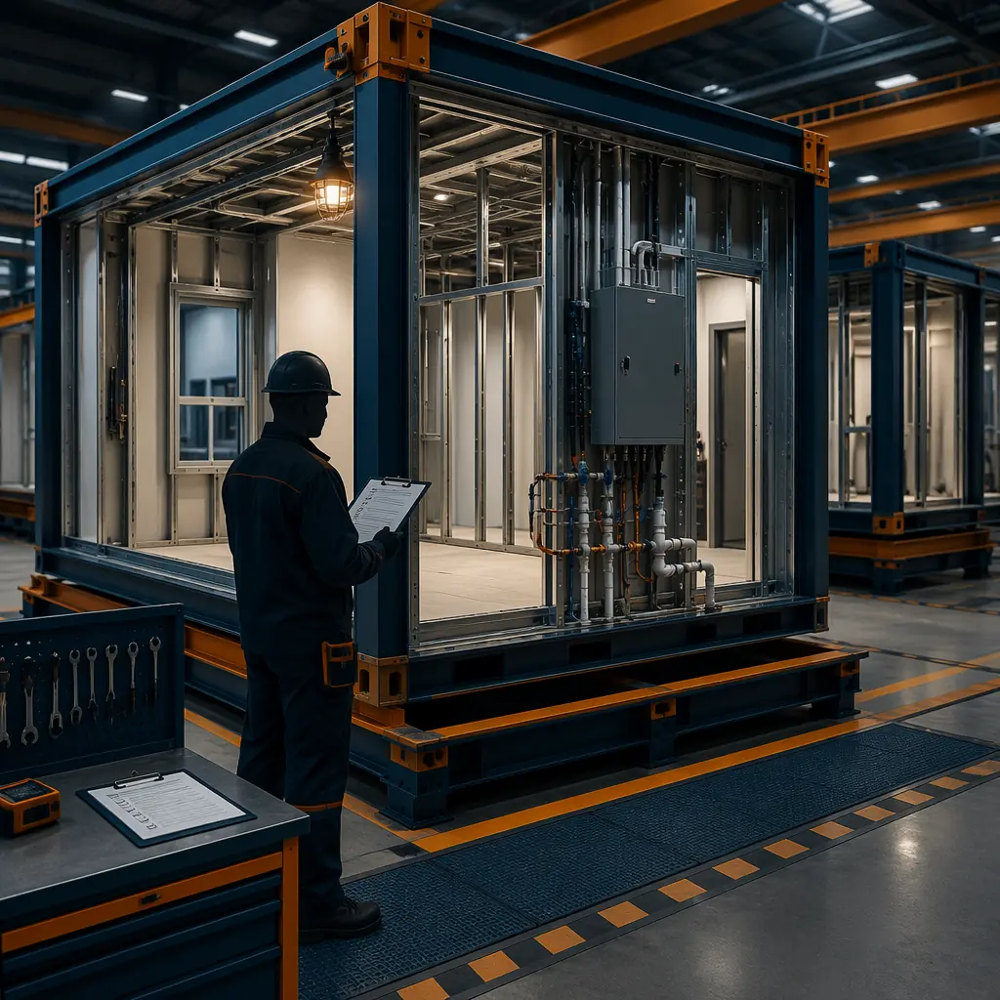
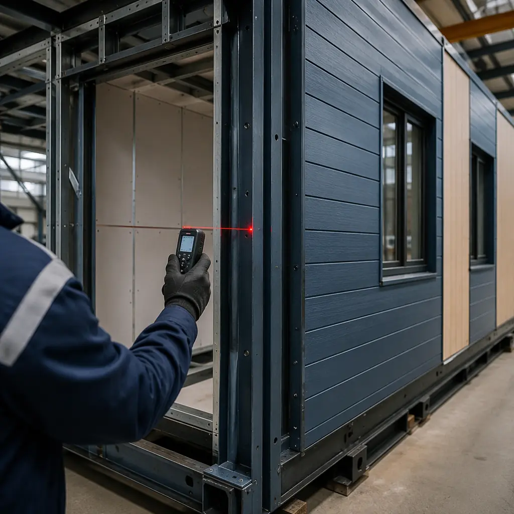

The Modular Building Institute (MBI) is the international trade association for modular construction, representing manufacturers, suppliers, and developers across 30+ countries. For developers evaluating modular construction for the first time, MBI certification is the most reliable signal of a manufacturer's capability: it means the factory has been audited against a comprehensive quality, safety, and compliance framework that goes well beyond ISO 9001. This guide explains what MBI certification actually means, how the Relocatable and Permanent certification categories differ, what the audit process looks like, and why certifying with an MBI-accredited manufacturer transforms project risk, insurance costs, and financing terms.

What the Modular Building Institute Actually Certifies
MBI certification is not a building code — it does not replace IBC, IRC, or local jurisdiction requirements. Instead, it certifies the manufacturer's quality management system, engineering capability, and production consistency For a deeper look, our modular biophilic design & well-certified… guide covers the details.. The audit evaluates 12 domains across the factory's operations, from design engineering and material procurement to module assembly, quality control testing, and post-delivery support.
The certification framework is structured around two building categories that reflect fundamentally different use cases and regulatory frameworks:
- MBI Relocatable (R) Certification. Covers temporary and relocatable modular buildings designed to be moved multiple times during their service life: construction site trailers, temporary classrooms, disaster relief housing, and mobile medical units. These buildings are typically regulated under state industrial/modular building programs rather than local building codes. The certification audit emphasizes structural integrity during transport, connection systems designed for repeated assembly/disassembly cycles, and weatherproofing across multiple relocations. Approximately 35% of MBI-certified manufacturers hold the R certification.
- MBI Permanent (P) Certification. Covers modular buildings installed on permanent foundations and regulated under the same IBC/IRC codes as site-built construction: apartments, hotels, hospitals, schools, offices, and all other permanent commercial and residential structures. This is the far more demanding certification. The audit evaluates structural engineering to ASCE 7 load requirements, fire-rated assembly testing per ASTM E119, MEP system integration and commissioning procedures, factory QA/QC with documented inspection hold points, and material traceability from mill certification through installation. Approximately 65% of MBI-certified manufacturers hold the P certification, but among manufacturers with 500+ completed projects, the P certification rate is near 100% — it is the industry's baseline for credible permanent construction capability.
For developers building permanent commercial structures, only the MBI P certification matters. An R-only certified manufacturer cannot credibly deliver a hospital, apartment building, or hotel — the certification frameworks address entirely different regulatory and performance requirements. Our 10-point partner evaluation checklist includes MBI certification verification as a mandatory pre-qualification step.

The MBI Audit Process: 12 Domains, 3 Days, One Pass/Fail
MBI certification is not a paperwork exercise. An independent third-party auditor spends three days on the factory floor, reviewing documentation and observing live production. The audit evaluates 12 domains, and failure in any single domain means no certification — there is no partial pass or provisional certification:
- Design & Engineering. Are licensed professional engineers (PE/SE) reviewing structural designs? Is engineering software validated? Are design calculations archived and retrievable? The auditor reviews a sample of recent project engineering packages and verifies PE stamps, calculation packages, and revision control.
- Material Procurement & Receiving. Does incoming material inspection verify mill certifications for structural steel? Are fasteners and connectors traceable to certified suppliers? Are non-conforming materials quarantined? The auditor traces three random steel shipments from mill cert through receiving inspection to final module — any broken traceability chain is a finding.
- Welding & Structural Fabrication. Are welders certified to AWS D1.1 or equivalent? Are welding procedure specifications (WPS) documented and available at each welding station? Is non-destructive testing (UT/MT) performed on structural welds? The auditor observes live welding operations and reviews NDT reports for the past 12 months.
- Module Assembly & Dimensional Control. Is there a documented assembly sequence with defined hold points? Are module dimensions verified at multiple stages (frame, enclosure, finish)? What is the documented dimensional tolerance — and what does actual production data show? A manufacturer claiming ±2 mm tolerance but showing production data with ±5 mm scatter will fail this domain.
- Fire-Rated Assembly Production. Are fire-rated wall, floor, and ceiling assemblies built exactly to the tested design? Are UL/Intertek listing documents available at the assembly station? Is there a documented process for maintaining assembly integrity at module-to-module joints? The auditor compares three completed fire-rated assemblies against their listing documentation — any deviation is a finding.
- MEP Pre-Installation & Testing. Are plumbing systems pressure-tested before drywall closure? Are electrical circuits continuity and insulation-tested? Are HVAC duct leakage tests performed? The auditor witnesses live testing of one module at the MEP completion stage.
- Quality Control Gate System. Does the factory operate a documented multi-gate QC system with defined acceptance criteria at each gate? Are QC records signed, dated, and retained? Does QC have stop-work authority independent of production management? The auditor reviews 12 months of QC records for completeness and trend analysis.
- Transportation & Rigging Engineering. Are module lifting points engineered and load-rated? Is transportation bracing designed to protect the module during transit? Are transport loads calculated and documented for each module? The auditor reviews transport engineering for three recent projects with different module sizes.
- Site Installation Procedures. Is there a documented module setting plan with crane requirements, sequence, and weather limitations? Are module-to-module connection procedures specified with torque values? Is waterproofing at module joints documented and field-verifiable?
- Health, Safety & Environmental. Does the factory maintain OSHA-compliant safety programs? Are incident rates tracked and below industry average? Is environmental compliance documented for paint, adhesives, and waste streams? The auditor reviews OSHA 300 logs and environmental permits.
- Warranty & Post-Delivery Support. Is the warranty documentation clear and accessible to customers? Is there a documented process for handling warranty claims within defined response times? Are warranty claim rates tracked and trending? The auditor reviews warranty claim logs and resolution times.
- Continuous Improvement. Does the manufacturer operate a corrective action system for non-conformances? Are root cause analyses performed for repeat issues? Is there evidence of process improvement from audit findings? ISO 9001 certification strongly correlates with passing this domain. Our deep dive on modular factory QC systems examines continuous improvement frameworks in detail.
The pass threshold across all domains is unambiguous: every domain must demonstrate documented processes, trained personnel executing those processes, and records proving consistent execution over time. A manufacturer that has good documentation but no records of actual execution will fail. A manufacturer that builds excellent modules but cannot produce engineering calculations on demand will fail.

How MBI Certification Reduces Developer Risk: Insurance, Financing & Due Diligence
For developers, the most practical question is not "what does MBI audit?" but "how does MBI certification change my project's risk profile?" The answer touches insurance, financing, and the due diligence burden on your team:
Insurance premiums. For a deeper look, our leed certification for modular construction &… guide covers the details. Builder's risk and general liability insurers increasingly differentiate between certified and non-certified modular manufacturers. The underwriter's logic is straightforward: an MBI P-certified manufacturer has a third-party-audited quality system, documented engineering, and a track record of passing independent inspections — all of which correlate with fewer construction defect claims. Developers working with MBI P-certified manufacturers report premium reductions of 15–25% on builder's risk policies compared to projects using non-certified modular suppliers, and some carriers offer modular-specific endorsements that further reduce premiums for projects using certified manufacturers with documented transportation and installation procedures.
Construction financing. Lenders financing modular construction projects face a specific concern: the manufacturer receives progress payments for modules in production, but the lender's collateral — the modules — sits in a factory potentially in another jurisdiction until delivery. MBI certification addresses this by providing audited evidence of the manufacturer's financial and operational stability, documented procurement and production tracking, and a warranty framework that protects the lender's interest in the completed building. Several major construction lenders now include MBI P certification as a covenant condition in modular construction loan agreements — meaning the loan cannot close without it. Our modular construction financing guide covers lender requirements in detail.
Due diligence efficiency. For a deeper look, our modular mep systems integration — how h… guide covers the details. For a developer evaluating three modular manufacturers for a 200-unit apartment project, the MBI audit effectively pre-completes 60–70% of the technical due diligence. Instead of your engineering team spending two weeks in each factory verifying welding procedures, QC systems, and engineering documentation, the MBI audit report provides independent third-party verification of all 12 domains. Your team can focus due diligence on project-specific capabilities — has this manufacturer built a 6-story apartment building with the same structural system? — rather than baseline quality verification.
Jurisdictional acceptance. For a deeper look, our modular vs hybrid construction — when t… guide covers the details. In states with industrial/modular building programs (California, Texas, Florida, New York, and 30+ others), the state program's plan review and in-plant inspection requirements overlap significantly with MBI P certification requirements. While MBI certification does not replace state program approval, manufacturers that hold MBI P certification consistently move through state program approval faster — typically 6–8 weeks vs 12–16 weeks for first-time applicants — because the state reviewers recognize that the MBI-audited quality system already covers much of what they need to verify.
MBI Certification vs Other Standards: ISO, ICC, State Programs
Developers often encounter multiple certifications when evaluating modular manufacturers, and understanding what each one actually covers prevents both over-reliance on irrelevant certifications and under-appreciation of certifications that matter:
| Certification | What It Covers | What It Does NOT Cover | Relevance to Modular |
|---|---|---|---|
| MBI P Certification | Modular-specific quality, engineering, production, transport, installation (12 domains) | Building code compliance (that's the state/local jurisdiction's role) | Highest — purpose-built for modular industry |
| ISO 9001 | Generic quality management system — process documentation, customer focus, continuous improvement | Modular-specific engineering, fire-rated assemblies, transport, site installation | Foundational — aids MBI domain 12 but insufficient alone |
| ICC-ES ESR | Product-specific evaluation: verifies that a specific modular system complies with IBC/IRC code provisions | Factory production consistency, QC systems, warranty processes | Valuable for code officials — complements MBI P, does not replace it |
| State Industrial Program Approval | Jurisdiction-specific review of designs, in-plant inspection, labeling — required for projects in that state | Quality consistency across projects, multi-jurisdiction portability | Required — MBI P accelerates state approval but does not replace it |
The practical developer takeaway: ISO 9001 is table stakes (most credible manufacturers hold it). MBI P certification is the modular-specific differentiator that separates manufacturers with documented, audited modular capability from those with general manufacturing quality systems. ICC-ES evaluation reports are valuable for specific project types in jurisdictions with stringent plan review. State program approval is mandatory for projects in states with industrial/modular programs, and MBI P certification accelerates that approval. Our permitting and zoning guide covers the approval landscape by jurisdiction.
What MBI Certification Means for Project Outcomes: Data from Certified Manufacturers
The MBI audit framework translates into measurable project outcomes. Data aggregated across MBI P-certified manufacturers with 500+ completed projects shows:
- Defect density at occupancy. MBI P-certified manufacturers average 0.3–0.7 defects per module at occupancy punch list, vs 2.1–4.5 for non-certified modular suppliers. The difference traces directly to MBI domain 7 (QC gate system): certified manufacturers catch and resolve assembly issues at the factory, where rework costs $50–200 per item, rather than at the site, where rework costs $500–2,000 per item.
- Schedule reliability. MBI P-certified manufacturers deliver modules within ±5% of the contracted production schedule 92% of the time, vs 74% for non-certified suppliers. The production transparency required by the audit — documented assembly sequences, hold points, daily QC records — functions as an early warning system that catches production delays before they compound.
- Warranty claim rate. First-year warranty claim incidence for MBI P-certified manufacturers averages 2.1 claims per 100 modules, vs 7.8 for non-certified. The claims that do occur are predominantly cosmetic (paint touch-up, drywall nail pops) rather than systemic (water intrusion, structural movement, MEP failures).
- Insurance claim frequency. Builder's risk claims during module transport and installation occur at 0.4% of module shipments for MBI P-certified manufacturers (domains 8 and 9 on transport and site installation), vs 2.7% for non-certified. The difference in module value at risk for a 200-module apartment project: approximately $12,500 in expected transport losses for certified vs $84,000 for non-certified.
These numbers are not marketing claims — they are derived from insurance actuarial data, warranty claim logs, and project closeout reports across the MBI member network. For a developer managing a $40 million modular apartment project, the expected cost of choosing a non-certified manufacturer over an MBI P-certified one — in rework, delay liquidated damages, and insurance premiums — is approximately $600,000–$1.2 million, before considering the harder-to-quantify costs of lender discomfort and jurisdictional friction.
How to Verify MBI Certification Before Signing a Contract
Not all manufacturers who claim "MBI certification" actually hold current, valid certification. The MBI maintains a public directory of certified manufacturers with certification category (R, P, or both) and expiration date. Before signing a modular construction contract, take these verification steps:
- Check the MBI public directory. Visit the Modular Building Institute website and search the member directory for the manufacturer. Confirm the certification category matches your project type. A manufacturer holding R certification only cannot credibly deliver a permanent commercial building — regardless of what their sales team claims.
- Request the audit summary report. MBI P-certified manufacturers receive a detailed audit summary report identifying findings (if any) and corrective actions taken. Request this report and review it. A clean audit with zero findings is rare and should be verified — most audits identify minor findings that the manufacturer addressed through documented corrective actions. A manufacturer that refuses to share the report, or claims to have lost it, is a red flag.
- Verify the certification is current. MBI certification requires annual renewal with a surveillance audit. Confirm the expiration date is at least 12 months from your contract signing date. A certification that expires mid-project means your project is being built by a manufacturer whose quality system is no longer independently verified during the production period most critical to your project.
- Match the certification to the factory. Large manufacturers may operate multiple factories, and MBI certification is factory-specific, not company-wide. A manufacturer with three factories where only one holds MBI P certification cannot route your modules through the certified factory unless contractually specified. Get it in writing: which factory will produce your modules, and is that specific factory MBI P-certified?
- Request references from projects of similar scale and type. MBI certification indicates capability; similar-project experience proves it. Ask for three references from projects within the past 24 months that match your project type (e.g., multi-family, hospitality) and scale (number of modules, building height). Our RFP and procurement guide includes a detailed pre-qualification questionnaire that incorporates MBI certification verification.
Why MBI Certification Matters More in 2026 Than Ever Before
The modular construction industry has grown from approximately $75 billion in 2020 to a projected $130 billion by 2026, driven by housing shortages, healthcare capacity demands, and data center expansion. This growth has attracted new entrants — manufacturers from adjacent industries (steel fabrication, prefab panel manufacturing) pivoting into modular without the engineering depth, QC infrastructure, or transportation expertise that permanent modular construction requires.
In this environment, MBI certification functions as the industry's quality filter. It separates manufacturers who have invested in the 12-domain capability framework from those who are learning on developers' projects. For developers, the choice is increasingly binary: work with an MBI P-certified manufacturer and operate within a known, audited quality framework, or work with a non-certified supplier and accept the risk of being the project on which that supplier learns what modular construction actually requires.
The cost of choosing wrong is not theoretical. Non-certified modular projects experience defect rates 6–10x higher during the first year of occupancy, warranty claim frequency 3–4x higher, and insurance loss ratios 5–7x worse — costs that developers absorb directly when the manufacturer's warranty proves inadequate or the manufacturer is no longer in business. MBI P certification does not eliminate project risk, but it reduces it to a known, manageable level backed by auditable evidence — and that is precisely what developers, lenders, and insurers need to underwrite modular construction as confidently as they underwrite traditional construction.